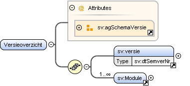

Element sv:Versieoverzicht
| Namespace | https://standaarden.overheid.nl/stop/imop/schemata/ | ||||||
| Definitie |
Root-element voor het overzicht van alle bekende IMOP-versies |
||||||
| Informatie |
Voorbeelden
|
||||||
| Informatiemodel | |||||||
| Diagram |

|
||||||
| Eigenschappen |
|
||||||
| Kinderen | Element sv:Module, Element sv:versie | ||||||
| Attributen |
|